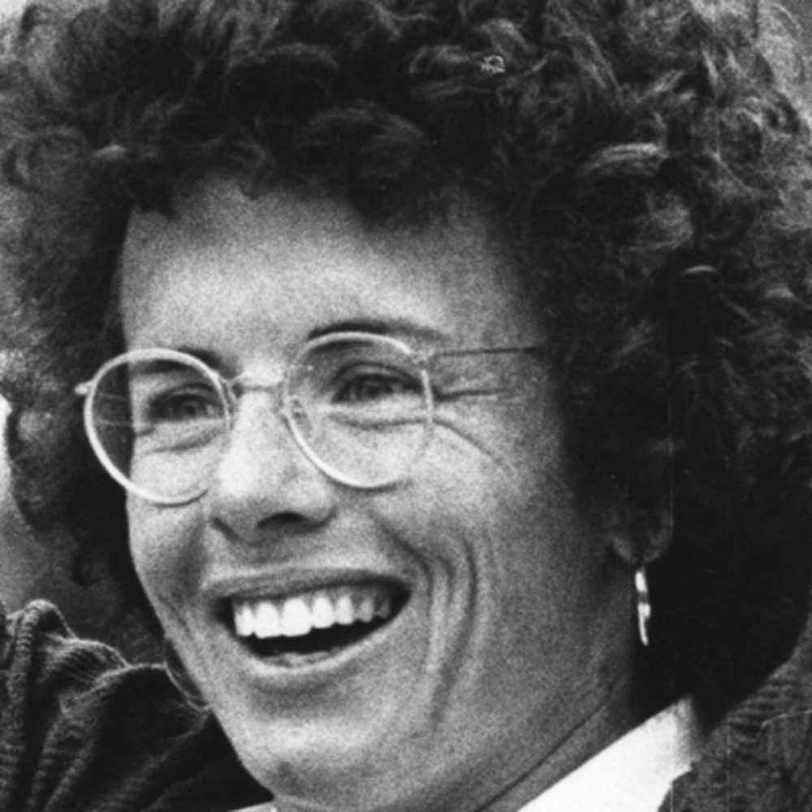

Inicio
Biografía

Billie Jean Moffitt King (Long Beach, California, 22 de noviembre de 1943) es una exjugadora de tenis de Estados Unidos. Se la considera una de las mejores jugadoras de tenis y una de las mejores deportistas de toda la historia. Es ganadora de 39 títulos de Grand Slam: 12 en individuales, 16 en dobles femenino y 11 en dobles mixto. Fue activista por los derechos de la mujer y el cambio social, dentro y fuera del deporte. En 1973 le ganó un partido a Bobby Riggs (1918-1995), campeón masculino número 1 del mundo en el año 1941, 1946 y 1947,1234 quien la retó en la Batalla de los Sexos, propaganda creada para visibilizar a la mujer en el deporte. Ese mismo año amenazó con boicotear el Abierto de Estados Unidos a menos que las mujeres recibieran un premio en dinero igual al de los hombres. Su demanda fue atendida y el Abierto de Estados Unidos se convirtió en el primer gran torneo en su tipo en ofrecer igualdad en las retribuciones.La norteamericana, laureada tenista en las décadas de 1960 y 1970, conquistó 12 Grand Slam, se impuso al exnúmero uno masculino Bobby Riggs y creó la WTA.
Billie Jean Moffitt nació en una familia de atletas en California. Su padre, Bill, era bombero y jugador de baloncesto. Su madre, Betty, era una buena nadadora. Su hermano menor, Randy era jugador de Baseball en la Liga desde 1972 a 1983. A los 11 años, Billie Jean, que ya destacaba en el baloncesto y softball, recibió una invitación de su amiga Susan Williams para jugar al tenis y todo cambió. Se graduó de Long Beach Polytechnic HighAsistió a la escuela y asistió a la Universidad Estatal de California, Los Ángeles, desde donde abandonó para seguir una carrera en el tenis. Billie Jean King se hizo profesional en 1968 y se convertiría en uno de los mejores tenistas de la historia.